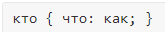

Синтаксис CSS
Стилевые правила записываются в собственном формате, отличном от HTML.
Это можно прочитать так:

CSS представляет собой процесс из трёх частей:
- селектор определяет, на какой элемент или элементы нацелиться;
- свойство определяет характеристики для изменения;
- значение определяет, как изменить эту характеристику.
Весь этот блок (селектор, свойство, значение) является правилом CSS.
Основным понятием выступает селектор — это шаблон, который используется для выбора одного или нескольких элементов HTML и применения к ним параметров форматирования. Допустим, вы хотите изменить цвет фона всех <div>. Общий способ записи имеет следующий вид
Вначале указывается имя селектора, например, div (без угловых скобок), это означает, что все стилевые параметры будут применяться ко всем элементам <div> в HTML-документе. Затем пишутся фигурные скобки, внутри которых идёт стилевое свойство, а его значение указывается после двоеточия. Стилевые свойства разделяются между собой точкой с запятой.
Распространённой практикой является сдвиг пары свойств и значений внутри фигурных скобок. Как и с HTML, отступы помогают держать наш код организованным и понятным.
Как и с HTML, отступы помогают держать наш код организованным и понятным.
Комментарии
Комментарии нужны, чтобы делать пояснения по поводу использования того или иного стилевого свойства, выделять разделы или писать свои заметки. Комментарии позволяют легко вспоминать логику и структуру селекторов, а также повышают разборчивость кода. Комментарии обычно применяют в отладочных или учебных целях, а при публикации сайта их стирают.
Синтаксис
/* Комментарий */
Чтобы быстро закомментировать нужный текст, выделяем его и зажимаем CTRL + /.
Чтобы быстро раскомментировать нужный текст, также полностью выделяем его вместе с знаками комментария и зажимаем CTRL + /.
Как следует из данного примера, комментарии можно добавлять в любое место CSS-документа, а также писать текст комментария в несколько строк. Вложенные комментарии, когда один комментарий располагается внутри другого, недопустимы.